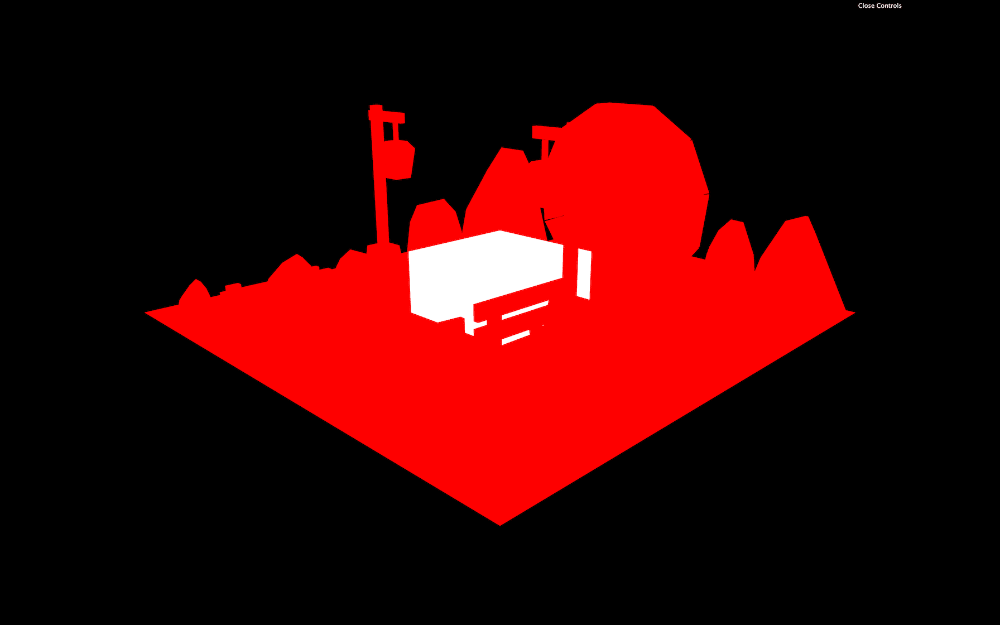

Introduction
In the previous lessons, we created and exported our scene.
We can now import it into Three.js, but we will also make sure to optimize our model as best as we possibly can.
Setup
Currently, all we have in our scene is a white cube.
The loaders have already been added to the code, and Draco is already supported:
The portal.glb and baked.jpg files are located in the /static/ folder but you can replace them with your own files.
An instance of Dat.GUI is also available, and we are going to add some tweaks to it in the next lesson.
The antialias is already set on the WebGLRenderer.
Loading the model
We can start by loading the model. We are going to keep the cube in the scene to make sure that everything is working. Once we can see our portal scene, we will get rid of the cube.
Load the model after the loaders part and test the result in the console:
If you don't get the scene in the console log, check the path and search for errors.
We will now try to add the model to the scene:
You should see some silhouettes.
The problem is that, by default, when GLTF exports PBR materials, they get interpreted as MeshStandardMaterial. And, this material needs light.
But we don't want lights because our scene is baked, and all the lighting and shadow information is already contained in the texture:
So, we are going to create a MeshBasicMaterial and apply it to all the elements in the scene.
Since we are going to create multiple materials, we need to create a section for them in the code before loading the model:
There are a lot of objects in the scene. Instead of applying the material to each one manually, we can traverse the scene in the load callback:

You should get all the objects visible with a uniform red color.
Now, remove the code related to the white cube.
Loading the texture
To load the texture, we can use the textureLoader already in the code.
Load it before the materials:
Make sure you don't get any error in the logs.
To apply this texture to our scene, we can add it to the bakedMaterial with the map property:
While this looks interesting and funny, this is not what we want.
The problem is that our texture Y coordinates are inverted. It's as if our texture has been mirrored vertically.
There is a disagreement between software / library about the direction of the Y axis in the texture's coordinates. We were unlucky in the illustration above, but all we need to do is flip the texture.
To do that, set the flipY property of bakedTexture to false:
The scene looks much better now.
We still need to take care of the pole lights and the portal. And, we also need to take care of the colors. Maybe you can't really see it, but the colors aren't exactly the same as in the Blender render:

Fixing the colors
Our baked texture is encoded with sRGB but Three.js isn't aware of that.
To set the encoding of the texture, change its encoding property to THREE.sRGBEncoding:
The colors look worse, but it's because we also need to set the output of our WebGLRenderer to sRGB.
To do that, set the outputEncoding property of the renderer to THREE.sRGBEncoding just like we did with the bakedTexture:

The colors are now exactly the same as in the Blender render.
This might seem like a small detail, but it can make a huge difference between a good result and a great result, especially if you're going for a realistic experience.
Fixing the emission objects
It's time to fix the pole lights and the portal.
Because they are emission materials, they should look like uniform bright colors which is why we can use MeshBasicMaterial.
Create a MeshBasicMaterial for the pole light:
Now the question is, how can we apply that material to the right objects in the scene.
If you log the children of the scene in the load callback, you'll see that there are 56 Meshes in it (this number might vary depending on your model):
To solve how to apply the right material to the right object, we are going to edit the model and set a specific name for each emission object.
Open the model in Blender (use your .blend file or use the file located in the /resources/ folder):
Enable selection on the emissions collection (if that's not already the case):
Rename each one of the objects accordingly:
poleLightApoleLightB-
portalLight
In Blender, you can't use the same name for multiple objects because they each have a unique ID.
Select everything (except the camera and the light) and export it as glTF 2.0:
Use the same parameters as in the previous lesson and replace the portal.glb file in the /static/ folder:

Spoiler alert, don't close Blender!
You can access object names in Three.js with the name property:
What we can do now, is search in the gltf.scene.children array by using the name property.
In JavaScript, you can "search" in an array with the find(...) method:
You should see each one of the 3 objects in the console.
If you get an error or undefined, check the names in your JavaScript as well as in your Blender scene. Also, make sure you exported the model the right way.
We can now replace the pole lights with the material we created earlier:
You should see your MeshBasicMaterial applied on both lamps.
Create a MeshBasicMaterial for the portal and apply it the same way:
If you have a portal color different than white, don't spend too much time trying to find the right value because we are going to replace it with a ShaderMaterial later.
Improving performances
We could stop here, but we have made some performance mistakes.
First, we can test the draw calls with Spector.js.
Monitoring
If you remember from the performance lesson, Spector.js is a Chrome plugin that let us see the different steps the GPU had to go through to create the render.
While this lesson is being written, the Chrome plugin isn't available anymore.
You don't need to install the plugin to follow the steps below, but it's always good to keep an eye on how your scene is being rendered in order to optimize it.
If you installed Spector.js in Chrome, hit the extension icon to activate it and hit it a second time to open the following menu:
Click the red circle to start processing the render. This might take few seconds.
Once processed, a window should open with all the details we need. On the left, you can scroll through the different steps taken to render the scene. The less you have, the better:
The performance is probably good enough, but if you think about it, we should only have 4 objects:
- The first pole light
- The second pole light
- The portal light
- All the baked objects
We don't need to separate the baked objects because we are pretty sure we are not going to move them. For example, if we moved the axe, we would still see its shadow on the trunk. If we moved a fence, we would still see its shadow on the floor.
To improve the performance, we are going to merge these geometries.
Merging the baked objects
Go back to Blender:
We don't want to affect the emissions objects. Make sure to set the emissions collection as un-selectable:
Merging all the geometries right now would be a bad idea because we might not be able to modify our scene after that. We are going to duplicate them first and put everything in a different collection before merging.
Create an empty merged collection:
Select all the objects in the scene (not the camera, the light and the emission objects) and duplicate them with SHIFT + D. Validate the duplicate by clicking once on the scene (without moving the mouse).
While those duplicates objects are still selected, move them to the merged collection by pressing M:
All the objects are now duplicated in the merged collection. You can merge them by pressing CTRL + J on Windows or CMD + J on MacOS.
Deactivate all the other collections and check that you have only one merged object:
Change the name of this single object to baked:
Reactivate the emissions collection in order to be able to select the objects inside.
You should keep the initial collections that you made, even if they are deactivated. They will be there in case we need to make changes or to re-bake the scene:
If you switch to Renderer shading, you'll see that the materials are still working on the merged object.
This is because Blender can handle multiple materials on one geometry. It's not a problem because, when exporting, we ask Blender not to export the material. But if you are curious to see what your scene looks like without materials, go to the Materials Properties tab while selecting the baked object and delete all the materials by clicking on the - icon:
This should result in a nice looking white scene.
We can now export the merged object and the emissions with the same parameters as before:
You should get the exact same result in Three.js:

But let's look at Spector.js:
As you can see, our scene is being drawn in only 4 steps. One for the baked object and one for each emission light.
We could have merged the two pole lights, but that's more than enough for now.
Now that we have only one object on which we want to apply the baked texture, we don't need to traverse all the children of the loaded scene.
We can search for it using the same method as for the emission objects:
You should get the same result. If not, make sure you changed the name of the merged object to baked and that you exported it with the 3 emissions objects.
In the next lesson, we are going to add some details to the scene.